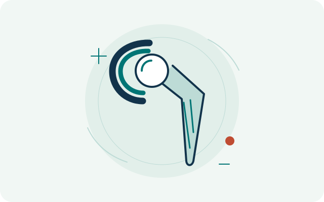
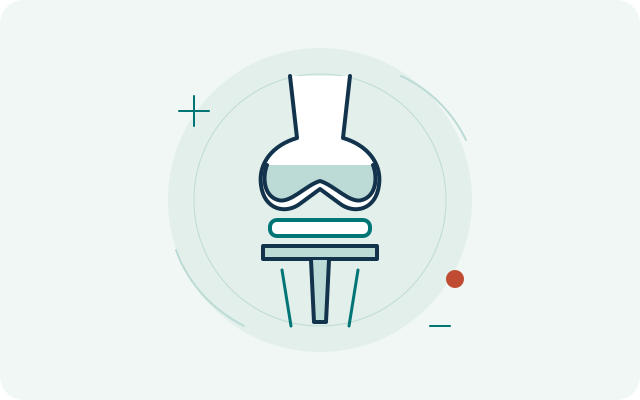
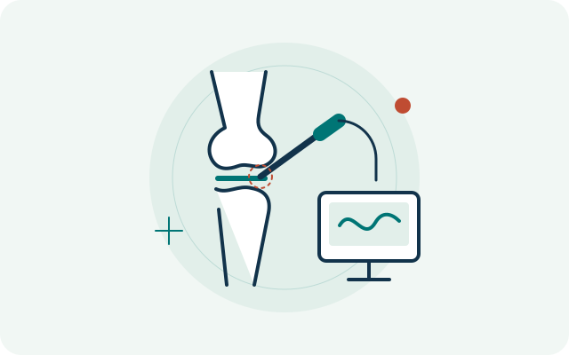

Hip & knee surgery
Assessment of hip and knee conditions, joint replacement, arthroscopy and selected ligament surgery.
Explore this areaORTHOPAEDIC CARE · SRI LANKA
Consultant Orthopaedic Surgeon
Specialist training in hip and knee surgery, with experience in orthopaedic trauma and limb reconstruction.
Explore Dr. De Silva’s experience, understand your options,
and find a consultation.
SPECIALIST AREAS
Focused areas of practice, supported by specialist training.
Assessment of hip and knee conditions, joint replacement, arthroscopy and selected ligament surgery.
Explore this areaAssessment and treatment planning for fractures and injuries affecting bones and joints.
Explore this areaAssessment of difficult fracture healing and selected limb-reconstruction problems.
Explore this areaCONDITIONS & ASSESSMENT
Explore information by body region and type of concern.
Hip concerns, hip fractures and assessment for joint replacement.
Knee concerns and injuries, including ligament problems.
General information about shoulder and elbow concerns.
EDUCATIONAL TOPICGeneral information about hand and wrist concerns.
EDUCATIONAL TOPICEducational information. Specialist service scope is awaiting confirmation.
EDUCATIONAL TOPICBroken bones, orthopaedic injuries and difficult fracture healing.
TREATMENTS & SURGERY
Understand the areas to discuss during an individual assessment.

Specialist assessment for hip replacement and hip conditions.
Read treatment information
Assessment for knee replacement as part of specialist knee care.
Read treatment information
Arthroscopy within Dr. De Silva’s documented knee-care scope.
Read treatment informationCLINICS & APPOINTMENTS
Explore consultation locations and the available booking channels.
A CLEAR NEXT STEP
Find a convenient hospital or channelling centre.
Explore locationsView the clinic’s eChannelling or Doc990 sessions. The provider confirms your appointment.
Understand bookingRead the consultation guide and note the questions you would like to ask.
Read the guideMaharagama
View sessions & book through:
Thalawathugoda
View sessions & book through:
Consultation dates, availability and final fees are confirmed by the hospital or booking provider.
RESOURCES & ARTICLES
Independent Sinhala and English articles, plus guides to help you prepare for a consultation.

PATIENT GUIDE EDUCATIONAL DRAFT
Discuss the recovery support appropriate to your treatment.
Read guide